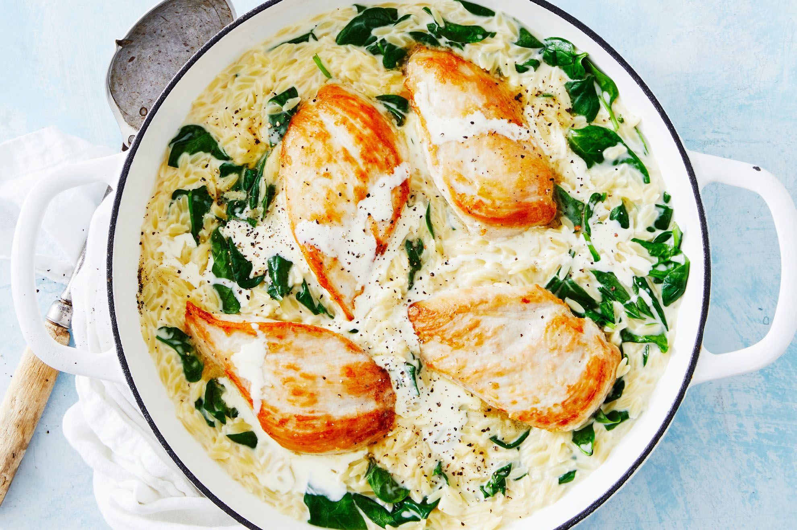

One-Pan Creamy Chicken and Spinach

Description
This one-pan creamy chicken and spinach features chicken breast cutlets, fresh spinach, and fire-roasted tomatoes, with Boursin cheese forming the creamy sauce. It cooks in 30 minutes, and there’s only one skillet to clean. It’s nice with rice or pasta, some crusty bread, and a side green salad.
Ingredients
- 1 pound boneless skinless chicken breasts
- salt and freshly ground black pepper to taste
- 1 tablespoon olive oil
- 1 tablespoon unsalted butter
- 1/2 cup chopped onion
- 1 clove garlic, minced
- 1/3 cup white wine or chicken broth
- 1 (14 1/2 ounce) can fire-roasted diced tomatoes
- 1 (5.2-ounce) package soft cheese, such as Boursin® Garlic & Fine Herbs Gournay cheese, cut into cubes
- 1 teaspoon Italian seasoning
- 4 cups packed roughly-chopped fresh spinach
- 2 tablespoons minced fresh chives
Steps
- Slice chicken breasts across the grain of the meat into cutlets, or have the butcher do it for you. Season both sides of each cutlet with salt and pepper.
- Heat oil and butter in a large skillet over medium heat. When the butter is melted, swirl the pan to mix butter and oil.
- Lightly brown seasoned chicken cutlets, turning once, about 2 to 3 minutes per side. Transfer to a plate and keep warm.
- To the same skillet, add onion and cook about 2 minutes. Increase heat to medium high. Add garlic and cook until fragrant, about 30 seconds. Add wine and cook, stirring, until most of the liquid is evaporated, about 2 minutes. Reduce heat to low.
- Stir in tomatoes and juice, Boursin, and Italian seasoning. Continue stirring occasionally, until the cheese is melted, about 5 minutes. Stir in chopped spinach. See note.
- Return chicken and any accumulated juices to the skillet, coating each side with the sauce. Allow to heat in the skillet until an instant-read thermometer inserted near the center of chicken reads 165 degrees F (74 degrees C).
- Garnish with fresh minced chives.